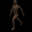
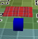

This directory is for regression testing of the Tower of Babel. It is assumed that the add-in has already been installed & enabled in Blender.
Place the version of babylon.js you wish to use in the 'lib' directory. The earliest supported is 1.14. All of the html files reference it as 'babylon.js' to avoid having to edit them. FYI, the htmls write a message into the browser console, listing the version, in-case you forget. This is also for any scripts which should be common across a _JSON & _inline.html pair.
The 'blender-in' directory holds each of the .blend files. The name reflects the main thing being tested. Refer to the table below, for a more complete list of features being tested.
The 'TOB-out' directory is where you should direct the .babylon/.js/.ts/.html/.log output from Blender. This directory is isolated, so that everything can easily be deleted. This ensures that you are not actually running with stuff exported previously. This directory is empty in Github (except for a .gitignore), so each .html in this directory will not run unless, you open Blender with the respective .blend & export to this directory.
Speaking of htmls, this directory has a xxx_JSON.html & xxx_inline.html for each .blend.
Here is the list of tests & secondary features they test:
| .blend | inline | JSON | Camera | Secondary features, notes |
|---|---|---|---|---|
| armature |  | Device Orientation | skeletal animation | |
| automaton |  | Free, Locked Target | Single ShapeKeyGroup, function() part of a Event Series, back-face culling, instance level pause / resume | |
| camera_anim | Free | Multi-materials, textures | ||
| mesh_parent | Game Pad | Shadows, animation to prove parenthood | ||
| multi_group | Arc Rotation | Multiple ShapeKeyGroup, independent & multi-group Event Series, AutomatonEventSeriesAction triggered through pick, normals, Group Conflicts, back-face culling, system wide pause / resume |